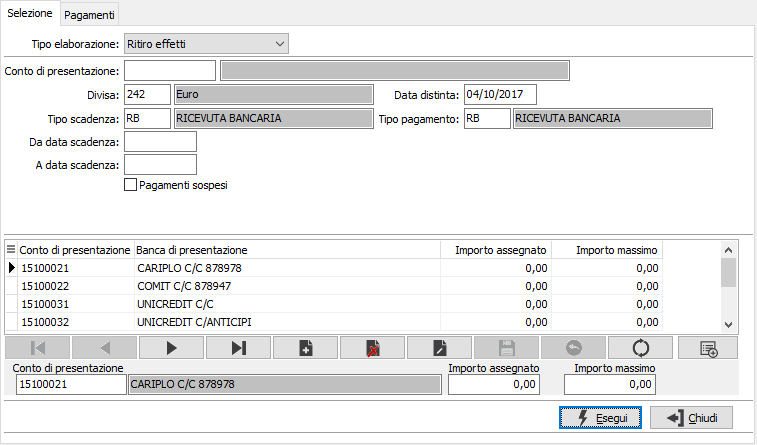
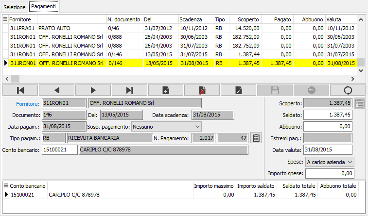
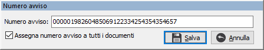
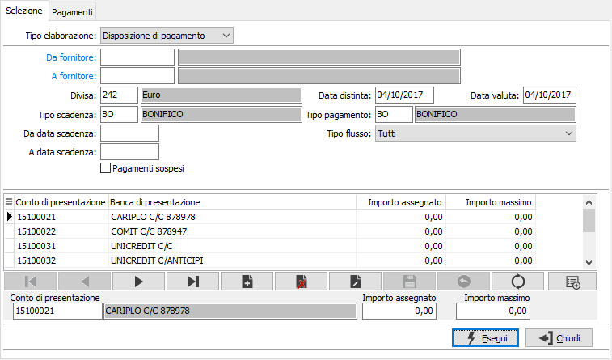
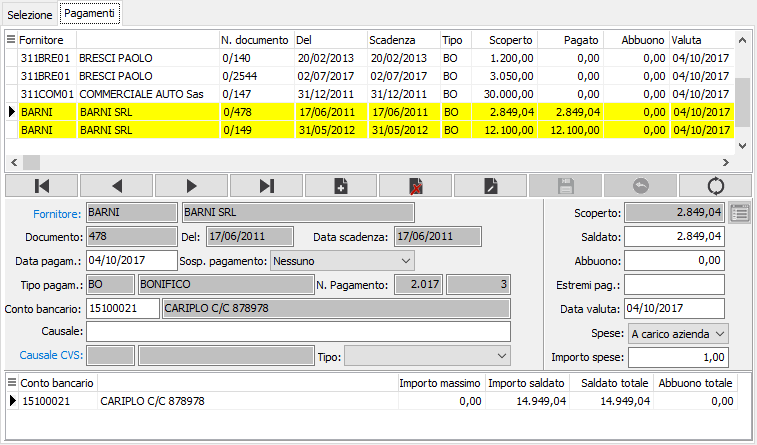

Elaborazione pagamenti
Il programma, assumendo informazioni dalla tabella Movimenti scadenze relativamente alle scadenze dei fornitori o dei percipienti R.A., consente di disporre i pagamenti. Sono previste due modalità di trattamento: il Ritiro effetti, che riguarda le scadenze passive di tipo RB (ricevute bancarie), TR (Tratte autorizzate) e CE (Cessioni, Cambiali): le Disposizioni di pagamento che riguardano le scadenze passive di tipo BO (Bonifico bancario), AS (Assegno). La seconda modalità genera successivamente, oltre alla distinta e al file, anche lettere di avviso ai fornitori interessati.
È importante ricordare che questo programma genera “distinte di pagamento”, e che queste diventano definitive solo all’atto della stampa. Pertanto accedendo più volte a questo programma senza stampare ogni volta la distinta definitiva, si continuerà ad aggiungere pagamenti alla stessa distinta purché ogni volta vengano indicati Riferimenti della distinta identici.
Ritiro effetti
Scegliendo l’opzione Ritiro effetti, si configura la seguente finestra video di selezione:

Definizione parametri di selezione:
CONTO DI PRESENTAZIONE: eventuale codice del conto di presentazione, presente nell’apposita tabella, già esistente sulle scadenze passive da selezionare perché presente in Anagrafica Fornitori o perché inserito dall’utente all’atto della registrazione del documento. Indicando il codice del conto di presentazione, verranno selezionate solo le scadenze passive che lo contengono; confermando a vuoto vengono invece selezionate tutte le scadenze passive prive di tale codice. Sul campo è attiva la ricerca su finestra F9 sulla Tabella Conti Correnti.
DIVISA: codice della divisa di cui devono essere estratti gli effetti per la preparazione della distinta. È necessario indicare una divisa perché gli Istituti bancari non accettano singole disposizioni di pagamento con più di una divisa. Sul campo è attiva la ricerca su finestra F9 sulla Tabella omonima.
TIPO SCADENZA: codice del tipo pagamento che si vuole selezionare. Sul campo è attiva la ricerca su finestra F9 sulla Tabella omonima.
DA DATA SCADENZA: indicare la data scadenza da cui inizia la selezione degli effetti per l'elaborazione della distinta. Confermando a vuoto, vengono selezionate tutte le scadenze anche con date precedenti a quella del giorno, relative al tipo scadenza indicato e non ancora pagate.
A DATA SCADENZA: indicare la data finale di scadenza a cui deve terminare la selezione degli effetti per l'elaborazione della distinta.
PAGAMENTI SOSPESI: check box che consente di visualizzare anche le scadenze “sospese”. Valori ammessi:
-
DATA DISTINTA: indicare la data di presentazione della distinta con la quale si vogliono disporre i pagamenti. Viene proposta la data di sistema, modificabile a cura dell’utente
TIPO PAGAMENTO: inserire il codice del tipo pagamento disposto tramite la distinta. Deve essere uguale al codice del tipo scadenza indicato nel campo precedente. Sul campo è attiva la ricerca su finestra F9 sulla Tabella omonima.
BANCA DI PRESENTAZIONE: inserire il codice del conto corrente sul quale si vogliono disporre i pagamenti, non necessariamente corrispondente al codice indicato nel campo “Conto di presentazione”. Sul campo è attiva la ricerca su finestra F9 sulla Tabella conti correnti
IMPORTO MASSIMO: Indicare un importo massimo di spesa che si intende raggiungere come limite al totale degli effetti presentati. Può corrispondere alla disponibilità di c/c esistente al momento sulla banca di presentazione. Non è comunque necessario indicare un importo massimo. Nel caso venga indicato, nella colonna pagato verranno aggiunti gli importi fino a non eccedere l'importo massimo.
 Il pulsante Inserisci conti correnti consente di inserire in modo automatico i conti correnti bancari eventualmente già presenti per gli effetti che rientrano nella selezione. Viene riportato nell'apposita casella l'importo totale degli effetti assegnati alla banca.
Il pulsante Inserisci conti correnti consente di inserire in modo automatico i conti correnti bancari eventualmente già presenti per gli effetti che rientrano nella selezione. Viene riportato nell'apposita casella l'importo totale degli effetti assegnati alla banca.
Finestra video pagamenti
Premendo il bottone Esegui, viene visualizzata la finestra video Pagamenti suddivisa in due sezioni: nella griglia della sezione superiore, vengono visualizzate tutte le scadenze coerenti con i parametri di selezione indicati. Per ciascuno di essi vengono visualizzate le informazioni salienti, lo scoperto e, nella colonna “Pagato” risulta già assegnato l’importo da pagare, corrispondente allo scoperto.
La sezione inferiore presenta il pannello di input e riporta analiticamente i dati di una delle scadenze presenti nella griglia superiore, e precisamente di quella contrassegnata con il simbolo freccia nella colonna di destra. L’utente può scorrere le varie scadenze tramite freccia giù o freccia su, fino ad individuare quella da modificare o da togliere dalla distinta. Per operare sulla scadenza, occorre utilizzare la barra funzioni del pannello di input, cliccando su Modifica per variare l’importo (confermando al termine con Salva) o cliccando su Cancella se si vuole eliminare la scadenza dalla distinta.

FORNITORE: campo obbligatorio contenente il codice del fornitore, presente nella rispettiva Anagrafica, cui si riferisce la scadenza. Sul campo è attiva la funzione di ricerca a video F9 sulla tabella omonima.
DOCUMENTO: serie e numero del documento cui si riferisce la scadenza
DEL: data del documento cui si riferisce la scadenza
SCADENZA: data di scadenza di pagamento della rata in esame del documento.
SOSP. PAGAMENTO: combo box che indica lo stato della rata. Valori possibili: Nessuno; Sospeso. Le scadenze sospese vengono presentate solo se richieste come parametro di selezione, allo scopo di consentirne la modifica in scadenze ordinarie.
TIPO PAGAMENTO: codice e descrizione della modalità di pagamento della scadenza attiva.
NUMERO PAGAMENTO: due campi (ANNO e NUMERO) contenenti il numero progressivo (nell’anno) di pagamento, assegnato alla scadenza in esame dal programma di Elaborazione pagamenti. Verrà stampato sulla distinta.

Il bottone permette sia di visualizzare il numero avviso assegnato sia di variare il numero avviso, la modifica di tale dato è possibile in stato di variazione del pagamento. Se il numero avviso che si intende modificare risulta assegnato ad un pagamento che raggruppa più scadenze deve essere specificato se il nuovo numero di avviso deve essere assegnato a tutti i documenti assegnati al pagamento stesso, tramite l’attivazione del flag (“Assegna numero avviso a tutti i documenti”) presente sotto il numero di avviso, se il nuovo numero di avviso non viene associato a tutti i documenti viene generato un nuovo pagamento con la sola scadenza su cui è stato modificato il numero avviso. In questa fase è possibile modificare il numero avviso ma non ne è permessa la cancellazione.
CONTO BANCARIO: codice alfanumerico di 8 caratteri, presente nella tabella Conti correnti, per indicare la banca di presentazione della distinta. Nella griglia in basso sono riepilogati i totali, degli importi saldato e abbuono, relativi al conto selezionato. Sul campo è attiva la viste F9 sulla tabella stessa.
SCOPERTO: importo della scadenza, assunto dalla tabella Movimenti scadenze.
SALDATO: importo che verrà pagato a saldo della scadenza in esame. Viene proposto automaticamente un importo identico allo scoperto, modificabile dall’utente in relazione all’effettivo importo che si vuole pagare.
ABBUONO: eventuale importo dell’abbuono. Viene proposto automaticamente se l’importo saldato è inferiore all’importo scoperto per una cifra compresa entro il limiti di sconto previsti in configurazione. Può essere modificato o eliminato dall’utente.
ESTREMI PAGAMENTO: campo descrittivo per scrivere il numero dell'assegno. Significativo solo per distinte assegni.
DATA VALUTA: eventuale data di accredito dell’importo al fornitore. Significativo solo per distinte bonifici.
Disposizioni di pagamento
Scegliendo invece l’opzione Disposizione di pagamento, si configura la seguente finestra video di selezione tramite la quale è necessario selezionare un fornitore per volta.
Definizione parametri di selezione

DA FORNITORE: codice del fornitore da cui si desidera iniziare la selezione relativa ai pagamenti da effettuare. Sul campo è attiva la ricerca su finestra F9 sulla Tabella omonima.
A FORNITORE: codice del fornitore con cui si desidera terminare la selezione relativa ai pagamenti da effettuare. Sul campo è attiva la ricerca su finestra F9 sulla Tabella omonima.
DIVISA: codice della divisa di cui devono essere estratti le scadenze per la preparazione della distinta. È necessario indicare una divisa perché gli Istituti bancari non accettano singole disposizioni di pagamento con più di una divisa. Sul campo è attiva la ricerca su finestra F9 sulla Tabella omonima.
TIPO SCADENZA: codice del tipo pagamento che si vuole selezionare. Sul campo è attiva la ricerca su finestra F9 sulla Tabella omonima. Per questo tipo di disposizione sono ammessi i valori: BO = Bonifico bancario; AS = Assegno.
DA DATA SCADENZA: indicare la data scadenza da cui inizia la selezione delle scadenze per l'elaborazione della distinta. Confermando a vuoto, vengono selezionate tutte le scadenze anche con date precedenti a quella del giorno, relative al tipo scadenza indicato e non ancora pagate.
A DATA SCADENZA: indicare la data finale di scadenza a cui deve terminare la selezione delle scadenze per l'elaborazione della distinta.
PAGAMENTI SOSPESI: check box che consente di visualizzare anche le scadenze “sospese”. Valori ammessi:
-
DATA DISTINTA: indicare la data di presentazione della distinta con la quale si vogliono disporre i pagamenti. Viene proposta la data di sistema, modificabile a cura dell’utente
TIPO PAGAMENTO: inserire il codice del tipo pagamento disposto tramite la distinta. Deve essere uguale al codice del tipo scadenza indicato nel campo precedente. Sul campo è attiva la ricerca su finestra F9 sulla Tabella omonima.
TIPO FLUSSO: filtro di selezione per scegliere se selezionare fornitori Italia, Estero o entrambi; in fase di salvataggio dati comunque vengono create due distinte diverse in relazione al tipo flusso.
BANCA DI PRESENTAZIONE: inserire il codice del conto corrente sul quale si vogliono disporre i pagamenti, non necessariamente corrispondente al codice indicato nel campo “Conto di presentazione”. Sul campo è attiva la ricerca su finestra F9 sulla Tabella conti correnti
IMPORTO MASSIMO: Indicare un importo massimo di spesa che si intende raggiungere come limite al totale degli effetti presentati. Può corrispondere alla disponibilità di c/c esistente al momento sulla banca di presentazione. Non è comunque necessario indicare un importo massimo. Nel caso venga indicato, nella colonna pagato verranno aggiunti gli importi fino a non eccedere l'importo massimo.
Il pulsante Inserisci conti correnti consente di inserire in modo automatico i conti correnti bancari eventualmente già presenti per gli effetti che rientrano nella selezione. Viene riportato nell'apposita casella l'importo totale degli effetti assegnati alla banca.
Finestra video pagamenti
Premendo il bottone Esegui, viene visualizzata la finestra video Pagamenti suddivisa in due sezioni: nella griglia della sezione superiore, vengono visualizzate tutte le scadenze coerenti con i parametri di selezione indicati. Per ciascuno di essi vengono visualizzate le informazioni salienti, lo scoperto e, nella colonna “Pagato” risulta già assegnato l’importo da pagare, corrispondente allo scoperto.
La sezione inferiore presenta il pannello di input e riporta analiticamente i dati di una delle scadenze presenti nella griglia superiore, e precisamente di quella contrassegnata con il simbolo freccia nella colonna di destra. L’utente può scorrere le varie scadenze tramite freccia giù o freccia su, fino ad individuare quella da modificare o da togliere dalla distinta. Per operare sulla scadenza, occorre utilizzare la barra funzioni del pannello di input, cliccando su Modifica per variare l’importo (confermando al termine con Salva) o cliccando su Cancella se si vuole eliminare la scadenza dalla distinta.

FORNITORE: campo obbligatorio contenente il codice del fornitore, presente nella rispettiva Anagrafica, cui si riferisce la scadenza. Sul campo è attiva la funzione di ricerca a video F9 sulla tabella omonima. Il pulsante Coordinate, se gestite in configurazione le coordinate bancarie multiple, consente di selezionare quelle previste per il fornitore.
DOCUMENTO: serie e numero del documento cui si riferisce la scadenza
DEL:data del documento cui si riferisce la scadenza
SCADENZA: data di scadenza di pagamento della rata in esame del documento.
SOSP. PAGAMENTO: combo box che indica lo stato della rata. Valori possibili: Nessuno; Sospeso. Le scadenze sospese vengono presentate solo se richieste come parametro di selezione, allo scopo di consentirne la modifica in scadenze ordinarie.
TIPO PAGAMENTO: codice e descrizione della modalità di pagamento della scadenza attiva.
NUMERO PAGAMENTO: due campi (ANNO e NUMERO) contenenti il numero progressivo (nell’anno) di pagamento, assegnato alla scadenza in esame dal programma di Elaborazione pagamenti. Verrà stampato sulla distinta.
CONTO BANCARIO: codice alfanumerico di 8 caratteri, presente nella tabella Conti correnti, per indicare la banca di presentazione della distinta. Nella griglia in basso sono riepilogati i totali, degli importi saldato e abbuono, relativi al conto selezionato. Sul campo è attiva la viste F9 sulla tabella stessa.
SCOPERTO: importo della scadenza, assunto dalla tabella Movimenti scadenze.
SALDATO: importo che verrà pagato a saldo della scadenza in esame. Viene proposto automaticamente un importo identico allo scoperto, modificabile dall’utente in relazione all’effettivo importo che si vuole pagare.
ABBUONO: eventuale importo dell’abbuono. Viene proposto automaticamente se l’importo saldato è inferiore all’importo scoperto per una cifra compresa entro il limiti di sconto previsti in configurazione. Può essere modificato o eliminato dall’utente.
ESTREMI PAGAMENTO: campo descrittivo per scrivere il numero dell'assegno. Significativo solo per distinte assegni.
DATA VALUTA: eventuale data di accredito dell’importo al fornitore. Significativo solo per distinte bonifici.
SPESE: definiscono il criterio di calcolo ed addebito spese; vengono riportate in base all'anagrafica del fornitore, ma sono modificabili.
DATI CVS: sono attivi solo per i bonifici estero; saranno riportati sul flusso.